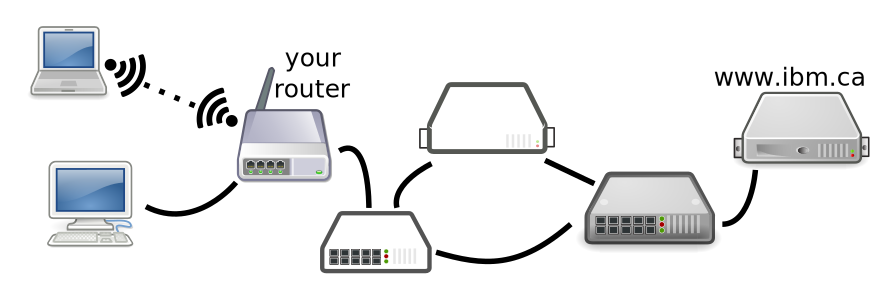

class: center, middle # Module 1 Intro ??? Notes for the _first_ slide! --- # Agenda 1. The Internet 2. How Computers Connect? 3. Protocols 4. HTTP 5. URLs 6. HTML, CSS, JavaScript 7. Why separate HTML, CSS, JavaScript? --- # The Internet <p>The <dfn style="color: skyblue">Internet</dfn> is fundamentally just a collection of connected computers.</p> <p>They are connected so they can exchange information with each other. In order to be part of the Internet, a computer must be connected to one (or more) others.</p> --- # The Internet <p>Computers exchange information by passing it along between themselves.</p> <p>Your computer is probably connected to only one other: its <dfn style="color: skyblue">gateway</dfn>. All of your Internet traffic flows in and out through the gateway.</p> --- # The Internet <p>Other computers may be connected to several others.</p> <p>These must know how which “direction” to send information to get it to its destination: this is called <dfn style="color: skyblue">routing</dfn> and these computers are called <dfn style="color: skyblue">routers</dfn>.</p> --- # The Internet <p>You likely have a router at home: it connects to several of your computers (with ethernet or wi-fi), and to a gateway outside that's provided by your ISP. [It may be integrated with the cable/DSL modem, but it's still doing the job of a router.]</p> --- # The Internet <p>The router is basically a little special-purpose computer that passes along info for you.</p> <aside class="links"><a href="https://commons.wikimedia.org/wiki/Category:Network_routers">Network routers in Wikimedia Commons</a></aside> <p>Routers also come in industrial sizes, connecting many computers at very fast speeds, but the ideas are all the same.</p> --- # The Internet <p>Internet-connected computers can also be given names. For example, there's a computer (or more than one) somewhere called <code class="url">www.google.ca</code>.</p> <p>These are a human-friendly way to refer to some computer out there that's connected to the Internet.</p> --- # The Internet <p>In order to get information between you and another computer (and back), all of the routers in between have to pass along the information.</p> <p>Each connection might be using a different connection technology. There might be multiple paths: this lets the Internet be fault tolerant. If one connection goes out, data can go a different way.</p> --- # The Internet <p>As long as there's a path (at least one) and all of the routers know what they're doing, data should get through.</p> <figure></figure> --- # How Computers Connect <p>There are many ways computers can be connected to pass information between themselves. There are various technologies for different situations (or historical reasons).</p> <p>Connection speeds are measured in <dfn style="color: skyblue">bits per second</dfn> (or kilobits/megabits/gigabits per second).</p> --- # How Computers Connect <p>A <dfn style="color: skyblue">bit</dfn> is a single 0 or 1 (or on/off or however you want to think of it).</p> <p>One <dfn style="color: skyblue">byte</dfn> is 8 bits. These are usually abbreviated as bits = <q>b</q>, bytes = <q>B</q> (but people aren't 100% consistent).</p> --- # How Computers Connect <p>Some rough size guesses:</p> <ul> <li>An email: a 5 kilobytes = 40 kilobits (no attachments).</li> <li>A camera image: 3 megabytes = 24 megabits.</li> <li>A web page: a few kilobytes to a few megabytes (depending on images, etc.)</li> <li>An MP3 (or streamed) song: 5 MB = 40 Mb.</li> <li>A movie: 1 GB = 8 Gb.</li> </ul> --- # How Computers Connect <p>There are a few common connections for personal computers (i.e. the kind of computer you actually use).</p> <p><dfn style="color: skyblue">Ethernet</dfn>: The typical wired connection. Speeds usually 100 Mb/s or 1 Gb/s. (Can be 10 Gb/s but probably not to a personal computer.) Cable length <100 m.</p> --- # How Computers Connect <p><dfn style="color: skyblue">Wi-Fi</dfn>: The usual wireless connection. Speeds 50 Mb/s to 500 Mb/s. Distance depends on what's in the way but usually also <100 m. Speed depends on the technology and also what's between you and the router.</p> --- # How Computers Connect <p>There are a few other connection methods too, like <a href="https://www.youtube.com/watch?v=ywQeJCa3jl8">powerline networks</a>. Basically, any way you can get data around your house will do, as long as your computer and router can both speak it.</p> --- # How Computers Connect <aside class="links"><a href="https://en.wikipedia.org/wiki/List_of_interface_bit_rates">Wikipedia: List of interface bit rates</a></aside> <aside class="links"><a href="https://www.sciencemag.org/news/2019/09/human-speech-may-have-universal-transmission-rate-39-bits-second">Human speech may have a universal transmission rate</a></aside> <p>Phone connections (modern ones, at least) carry Internet data: LTE (3G, 4G, 5G), HSPA. Phones can also use Wi-Fi when it's available.</p> --- # How Computers Connect <p>At home, these are used to connect your computer to your router (or DSL/cable modem). On campus, they connect you to a large router in institution's network.</p> --- # How Computers Connect <p>On the larger scale, the ideas are the same but everything is higher-capacity.</p> <aside class="links"><a href="https://youtu.be/G1Ke-H8I1uk">How Does Light Carry Data?</a></aside> <p><dfn style="color: skyblue">Fibre optic</dfn> cables use strands of glass to transmit light pulses. These can transmit <em>very</em> high rates of data over long distances: Tb/s over many kilometres.</p> --- # Protocols <p>Once computers have a way to pass data back and forth, we need some way to make sense of it.</p> <p>A <dfn style="color: skyblue">protocol</dfn> is a way that we agree to have computers exchange information so that both ends can understand the contents. As long as everybody is following the same rules about how to encode the information, they should be able to communicate.</p> --- # Protocols <p>An analogy: we use English words (<q>down</q>, <q>table</q>, <q>synthesis</q>) to mean a certain things. We all know what the word means, so we can use it to communicate an idea.</p> <p>Computers can do the same: a certain pattern of bits means <q>I want to send an email to my friend</q>, and as long as both sides agree on that, it should work.</p> --- # Protocols <p>Different kinds of information we want to pass around the Internet have different protocols. Some examples… </p><ul> <li>SMTP: (Simple Mail Transfer Protocol) The way email is transferred from the sender to the recipient's inbox.</li> <li>IMAP: (Internet Message Access Protocol) One way to get email from your inbox so you can read it. Others: Exchange, the Connect web interface.</li> </ul> --- # Protocols <ul> <li>NTP: (Network Time Protocol) Used to synchronize computers' clocks with some authoritative source.</li> <li>Games: any networked/multiplayer game has some protocol that is used to communicate what's happening in the game.</li> <li>HTTP: HyperText Transfer Protocol. The protocol that runs the World Wide Web.</li> </ul> --- # HTTP <p><dfn style="color: skyblue">HTTP</dfn> is an important protocol for this course.</p> <p>Basically, content <q>is on the web</q> is synonymous with <q>can be accessed using HTTP</q>. HTTP allows transmission of ideas like <q>give me this web page…</q> and <q>here is the page you requested…</q> or <q>I can't find that page</q>.</p> --- # HTTP <p>When asking for a web page, the web browser on your computer is acting as an internet <dfn style="color: skyblue">client</dfn>: it initiates the connection to the server.</p> <p>Once it connects, it makes a <dfn style="color: skyblue">request</dfn> for some content. HTTP defines how the request is encoded (in bits) so the server can understand it.</p> --- # HTTP <p>The <dfn style="color: skyblue">server</dfn> refers to both another computer (like <code class="url">www.ibm.ca</code>) and the program running on it that responds to requests.</p> <p>The server will find (or generate) the requested content and send it back to the client. This is the <dfn style="color: skyblue">response</dfn>, also an HTTP message.</p> <p>The response could also be a “not found” or “redirect” or other status/error messages.</p> --- # HTTP <p>There are other things that can act as web clients (or sometimes called <dfn style="color: skyblue">user agents</dfn>).</p> <p>e.g. the Google page indexer, the HTML validator (later), other automated tools.</p> <p>Mobile apps also often talk to a central server with HTTP, and are thus acting as web clients as well.</p> --- # HTTP <p>HTTP requests can also be made with the HTTP<strong>S</strong> protocol. (S for <q>secure</q>)</p> <p>HTTPS is the same as HTTP but content is encrypted, so none of the computers between client and server can understand on the conversation.</p> --- # HTTP <p>The computers between the client and server can see the entire conversation go by: if it's not encrypted, they can also understand it.</p> <figure class="continuation"></figure> --- # URLs <p>A <dfn style="color: skyblue">URL</dfn> (Uniform Resource Locator) is the full address of a piece of content on the web.</p> <p>Like <q><code class="url">http://www.w3.org/html/</code></q>.</p> --- # URLs <ul> <li><q>Uniform</q>: a URL works from anywhere, and “locator”: it's used to locate the resource.</li> <li><q>Resource</q>: a piece of content that is accessible at a URL. Could be an HTML page, or image, or any other content.</li> <li><q>Locator</q>: it's used to actually find (and request) the resource.</li> </ul> --- # URLs <p>The basic parts of a URL:</p> <figure></figure> --- # URLs <p>The <dfn style="color: skyblue">scheme</dfn> indicates the protocol that will be used: <code class="url">http:</code> and <code class="url">https:</code> URLs refer to web content. </p> <p>You might have seen a few other URL schemes, possibly <code class="url">mailto:</code> for indicating an email address, <code class="url">sftp:</code> for a secure file transfer, <code class="url">smb:</code> for a Windows file share.</p> <p>Each implies a different protocol, but is a way to refer to (and locate) a specific piece of content.</p> --- # URLs <p>The <dfn style="color: skyblue">server</dfn> (or <dfn style="color: skyblue">host name</dfn>) is the name of the computer acting as the server: the one that will be contacted with the request.</p> <p>The <dfn style="color: skyblue">path</dfn> indicates which page on the server we're referring to.</p> --- # HTML, CSS, JavaScript <p>We will be seeing three major pieces of technology in this course. They are also the three technologies that that make web pages work.</p> --- # HTML, CSS, JavaScript <p><dfn style="color: skyblue">HTML</dfn>: HyperText Markup Language.</p> <p>HTML is how the <em>content</em> of web pages is specified. It contains headings, paragraphs, lists, etc.</p> <p>… but nothing about what those pieces of content look like.</p> --- # HTML, CSS, JavaScript <p><dfn style="color: skyblue">CSS</dfn>: Cascading Style Sheets.</p> <p>CSS is used to indicate the <em>appearance</em> of HTML content on the screen.</p> <p>e.g. it can express things like <q>headings are twice as big as other text, bold, and centred</q>.</p> --- # HTML, CSS, JavaScript <p><dfn style="color: skyblue">JavaScript</dfn> is a programming languaged used to indicate <em>behaviour</em> of parts of the page.</p> <p>e.g. when the user clicks a button, something else on the page changes.</p> --- # Why Separate? <p>Why do we separate content, appearance, and behaviour? And why do we need three different languages for these things?</p> <p>Hopefully it will become more clear as the course goes on, but…</p> --- # Why Separate? <p>These tasks need different languages because the jobs are so different.</p> <p>It would be awkward to express <q>this is a paragraph</q> and <q>paragraphs are green</q> with the same language. Each of the three languages we'll see is good at its job.</p> --- # Why Separate? <p>We will often use the same CSS and JavaScript on multiple HTML pages.</p> <p>If we write them in separate files, it's easier to reuse them. For example, use the same appearance information (CSS) for all of the pages (HTML) on our site, and make sure they have a unified look.</p> --- # Why Separate? <p>Using the same CSS and JavaScript across our web sites can be faster: users only have to download the appearance/behaviour information once, even if they go to 10 different pages.</p> --- # Why Separate? <p>It will be easier to maintain and update: there's only one place to fix a problem.</p> <p>Maybe we want separate people to handle each part: an author for the HTML, a designer for the CSS, and a programmer for the JavaScript.</p> --- # Q & A